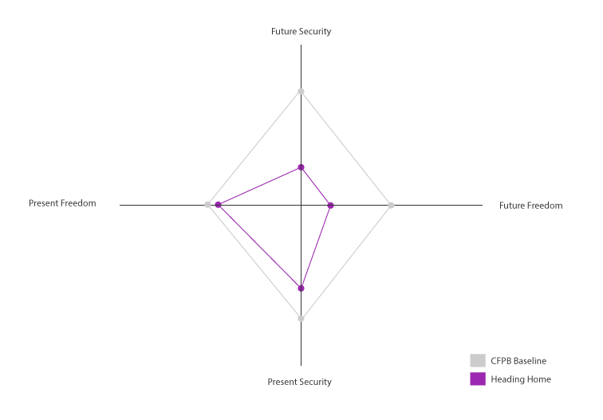

<section>
  <h2>Overall Wellness (+/&ndash;)</h2>
  <p>Inside the CFPB baseline is negative and outside is positive.</p>
  
  <a href="http://www.consumerfinance.gov/reports/financial-well-being/" target="_blank"><button class="button reset-btn  mdl-button mdl-js-button mdl-button--raised mdl-js-ripple-effect mdl-button--raised"><i class="material-icons">launch</i> Read more about the CFPB Baseline</button></a>    
</section>
